| ✅ | ✅ | ✅ | ✅ | ✅ | ✅ |
|---|
Ultrasonic Sensor¶

- class UltrasonicSensor(port)¶
LEGO® SPIKE Color Sensor.
- Parameters:
port (Port) – Port to which the sensor is connected.

- awaitdistance() int: mm¶
Measures the distance between the sensor and an object using ultrasonic sound waves.
- Returns:
Measured distance. If no valid distance was measured, it returns 2000 mm.
- awaitpresence() bool¶
Checks for the presence of other ultrasonic sensors by detecting ultrasonic sounds.
- Returns:
Trueif ultrasonic sounds are detected,Falseif not.
Built-in lights
This sensor has 4 built-in lights. You can adjust the brightness of each light.
Examples¶
Measuring distance and switching on the lights¶
from pybricks.pupdevices import UltrasonicSensor
from pybricks.parameters import Port
from pybricks.tools import wait
# Initialize the sensor.
eyes = UltrasonicSensor(Port.A)
while True:
# Print the measured distance.
print(eyes.distance())
# If an object is detected closer than 500mm:
if eyes.distance() < 500:
# Turn the lights on.
eyes.lights.on(100)
else:
# Turn the lights off.
eyes.lights.off()
# Wait some time so we can read what is printed.
wait(100)
Gradually change the brightness of the lights¶
from pybricks.pupdevices import UltrasonicSensor
from pybricks.parameters import Port
from pybricks.tools import wait, StopWatch
from umath import pi, sin
# Initialize the sensor.
eyes = UltrasonicSensor(Port.A)
# Initialize a timer.
watch = StopWatch()
# We want one full light cycle to last three seconds.
PERIOD = 3000
while True:
# The phase is where we are in the unit circle now.
phase = watch.time() / PERIOD * 2 * pi
# Each light follows a sine wave with a mean of 50, with an amplitude of 50.
# We offset this sine wave by 90 degrees for each light, so that all the
# lights do something different.
brightness = [sin(phase + offset * pi / 2) * 50 + 50 for offset in range(4)]
# Set the brightness values for all lights.
eyes.lights.on(brightness)
# Wait some time.
wait(50)